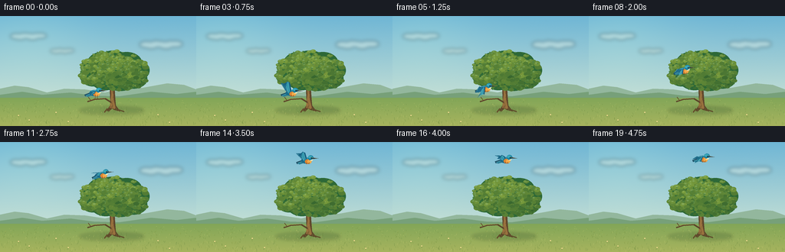
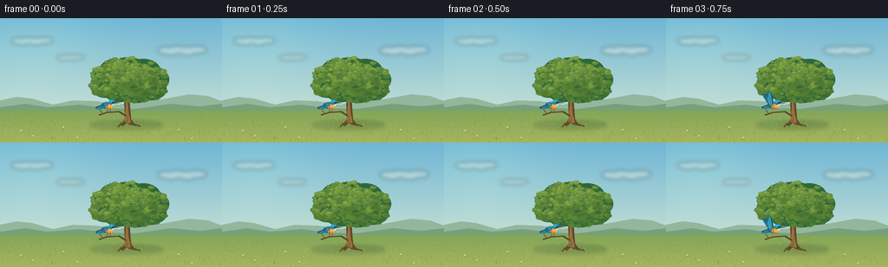

CODING AGENTS AS PIXEL WORLD MODELS
traex/GPT-6.1-Sol · dynamic_spatial_relationship_0050
点击播放 · 原生 RGB 像素
逐轮保存的候选
回放视频、检查图与代码变化。
每份候选均可单独播放。实际图片检查记录在下方工具轨迹中。
候选 01播放与检查图
点击播放 · 原生 RGB 像素


展开代码变化
--- 上一保存版本
+++ 本次保存版本
@@ -0,0 +1,198 @@
+"""Procedurally rendered RGB animation: a bird rises from in front of a tree."""
+from pathlib import Path
+import math
+import json
+import numpy as np
+from PIL import Image, ImageDraw, ImageFilter
+import artifact_io
+
+ROOT = Path(__file__).resolve().parent
+SPEC = json.loads((ROOT / 'task_spec.json').read_text())
+W, H = SPEC['width'], SPEC['height']
+S = 4
+rng = np.random.default_rng(2851)
+
+def layer():
+ return Image.new('RGBA', (W*S, H*S))
+
+def polygon(d, points, fill):
+ d.polygon([(round(x*S), round(y*S)) for x,y in points], fill=fill)
+
+def ellipse(d, box, fill):
+ d.ellipse(tuple(round(v*S) for v in box), fill=fill)
+
+def line(d, points, fill, width=1):
+ d.line([(round(x*S),round(y*S)) for x,y in points], fill=fill, width=max(1,round(width*S)), joint='curve')
+
+def bezier(a,b,c,e,n=32):
+ return [((1-t)**3*a[0]+3*(1-t)**2*t*b[0]+3*(1-t)*t*t*c[0]+t**3*e[0],
+ (1-t)**3*a[1]+3*(1-t)**2*t*b[1]+3*(1-t)*t*t*c[1]+t**3*e[1]) for t in np.linspace(0,1,n)]
+
+# A softly graded clear sky, with a very fine paper-like natural texture.
+yy,xx = np.mgrid[0:H*S,0:W*S]
+t=yy/(H*S)
+sky_top=np.array([111,182,213]); sky_bottom=np.array([223,236,213])
+a=sky_top[None,None,:]*(1-t[:,:,None])+sky_bottom[None,None,:]*t[:,:,None]
+sun=np.exp(-(((xx/S-39)/80)**2+((yy/S-23)/59)**2))
+a+=sun[:,:,None]*np.array([12,10,3])
+a+=rng.normal(0,.38,a.shape[:2])[:,:,None]
+base=Image.fromarray(np.uint8(np.clip(a,0,255))).convert('RGBA')
+cloud=layer(); dc=ImageDraw.Draw(cloud)
+for x,y,w,h in [(37,27,27,6),(210,38,32,7),(81,46,18,4)]:
+ for k in range(7):
+ cx=x+(k-3)*w/5
+ cy=y+math.sin(k*2)*h*.2
+ ellipse(dc,(cx-w*.28,cy-h*.7,cx+w*.28,cy+h*.5),(255,254,235,82))
+base.alpha_composite(cloud.filter(ImageFilter.GaussianBlur(2.4*S)))
+d=ImageDraw.Draw(base)
+# Quiet, hazy hills preserve a clean silhouette for the tree and flying bird.
+polygon(d,[(0,105),(0,95),(19,91),(37,93),(61,100),(84,95),(111,96),(137,100),(161,94),(185,94),(218,88),(240,90),(256,96),(256,115)],(147,183,157,255))
+polygon(d,[(0,109),(0,103),(29,99),(55,103),(92,100),(122,104),(155,105),(197,99),(230,102),(256,99),(256,119)],(119,160,121,255))
+# Meadow with warm light in the foreground.
+meadow=layer(); dm=ImageDraw.Draw(meadow)
+for y in np.arange(107,H,.25):
+ q=(y-107)/(H-107)
+ col=tuple(int(v) for v in np.array([130,166,88])*(1-q)+np.array([167,180,94])*q)+(255,)
+ line(dm,[(0,y),(W,y)],col,.4)
+base.alpha_composite(meadow)
+shadow=layer(); ds=ImageDraw.Draw(shadow)
+ellipse(ds,(103,118,188,129),(56,89,47,58))
+ellipse(ds,(133,119,187,126),(48,80,44,66))
+base.alpha_composite(shadow.filter(ImageFilter.GaussianBlur(2.0*S)))
+d=ImageDraw.Draw(base)
+# Grass blades are small, irregular, and concentrated near the bottom edge.
+for k in range(550):
+ x=rng.uniform(0,256); y=rng.uniform(110,144)
+ h=rng.uniform(.5,2.8)*(0.45+(y-110)/34)
+ color=[(104,136,64,165),(192,199,111,190),(124,151,66,210),(150,169,78,230)][k%4]
+ line(d,[(x,y),(x+rng.uniform(-1.1,1.1),y-h)],color,rng.uniform(.15,.32))
+# Tree: sculpted trunk, several tapered branches, and fine bark.
+polygon(d,[(139,124),(144,116),(143,94),(139,80),(143,69),(148,69),(149,88),(150,105),(151,117),(157,125),(149,123),(146,121),(142,125)],(95,70,43,255))
+polygon(d,[(143,120),(145,103),(144,88),(143,80),(146,72),(147,90),(148,109),(151,122)],(152,113,62,255))
+line(d,[(147,97),(160,83),(172,72)],(101,77,46,255),3.3)
+line(d,[(144,93),(131,83),(122,72)],(108,77,43,255),3.1)
+line(d,[(146,80),(153,70),(156,62)],(108,77,43,255),2.4)
+line(d,[(140,121),(136,126)],(100,77,43,255),1.7)
+line(d,[(150,121),(162,125)],(95,73,42,255),1.5)
+for k in range(20):
+ x=rng.uniform(144,148); y=rng.uniform(90,119)
+ line(d,[(x,y),(x+rng.uniform(-.4,.4),y+rng.uniform(1,4))],(100,77,43,155),.25)
+# A broad, lobed canopy. Clumps are lit individually for depth rather than flat dots.
+clumps=[(121,78,17,14),(119,67,14,12),(133,61,19,14),(148,57,19,12),
+ (165,61,20,14),(177,71,18,14),(174,82,18,13),(157,85,21,13),
+ (138,81,21,16),(144,69,25,17),(159,73,23,18)]
+canopy=layer(); dc=ImageDraw.Draw(canopy)
+for cx,cy,rx,ry in clumps:
+ ellipse(dc,(cx-rx,cy-ry,cx+rx,cy+ry),(45,104,55,255))
+# Back-to-front placement gives the leaves a coherent painterly volume.
+for idx,(cx,cy,rx,ry) in enumerate(clumps):
+ for k in range(57):
+ theta=rng.uniform(0,2*math.pi); r=math.sqrt(rng.uniform(0,.9))
+ x=cx+math.cos(theta)*rx*r; y=cy+math.sin(theta)*ry*r
+ radius=rng.uniform(1.7,4.4)
+ lit=np.clip(.62-(x-cx)/rx*.19-(y-cy)/ry*.29+rng.normal(0,.12),0,1)
+ c=np.array([41,91,44])*(1-lit)+np.array([123,157,61])*lit
+ ellipse(dc,(x-radius,y-radius*.67,x+radius,y+radius*.67),tuple(c.astype(int))+(255,))
+ if lit>.63:
+ ellipse(dc,(x-radius*.6,y-radius*.48,x+radius*.18,y-radius*.03),tuple(np.minimum(c+np.array([8,9,2]),255).astype(int))+(210,))
+# Loose leaf tips have a delicate silhouette.
+for k in range(140):
+ cx,cy,rx,ry=clumps[int(rng.integers(len(clumps)))]
+ th=rng.uniform(0,math.pi*2)
+ x=cx+rx*math.cos(th)*rng.uniform(.9,1.04)
+ y=cy+ry*math.sin(th)*rng.uniform(.9,1.04)
+ rr=rng.uniform(.5,1.35)
+ ellipse(dc,(x-rr,y-rr*.5,x+rr,y+rr*.5),(77,126,53,235))
+base.alpha_composite(canopy)
+# Low branch visibly in front of the main trunk, used as the initial perch.
+d=ImageDraw.Draw(base)
+line(d,[(145,113),(137,108),(123,109),(114,112)],(91,69,42,255),1.7)
+line(d,[(137,107.6),(123,108.5),(116,110.8)],(165,131,73,255),.45)
+line(d,[(118,110),(115,106)],(99,75,42,255),.8)
+for k in range(22):
+ x=rng.uniform(130,166); y=rng.uniform(121,128)
+ line(d,[(x,y),(x+rng.uniform(-2,2),y-rng.uniform(2,4))],(98,130,59,255),.35)
+for x,y in [(24,130),(38,136),(206,129),(221,139),(73,126),(89,138)]:
+ line(d,[(x,y+2),(x+.3,y-1)],(115,141,59,255),.4)
+ ellipse(d,(x-.85,y-.65,x+.85,y+.65),(242,220,146,255))
+
+# Bird local coordinates: its blue upper plumage contrasts with yellow-green leaves.
+# Wings are drawn as feathered fans, with the same anatomy through every stroke.
+def draw_bird(canvas,x,y,phase,flight,tilt=0):
+ bird=layer(); db=ImageDraw.Draw(bird)
+ co,si=math.cos(tilt),math.sin(tilt)
+ def pts(seq):
+ return [(x+px*co-py*si,y+px*si+py*co) for px,py in seq]
+ def poly(seq,col): polygon(db,pts(seq),col)
+ def path(seq,col,w=.4): line(db,pts(seq),col,w)
+ def oval(cx,cy,rx,ry,col):
+ poly([(cx+rx*math.cos(a),cy+ry*math.sin(a)) for a in np.linspace(0,2*math.pi,40)],col)
+ # Tail feathers, partially fanned during lift.
+ poly([(-5,-1),(-14,2),(-13,4.4),(-5,3)],(28,73,94,255))
+ poly([(-5,0),(-13,3),(-10,5),(-3,3)],(42,127,150,255))
+ path([(-12,3),(-6,1.4)],(115,184,188,255),.35)
+ flap=math.sin(phase)
+ if flight:
+ # Far wing remains narrower and slightly behind the near one.
+ far=[(-2,-1),(-8,-3),(-14,-5-10*flap),(-8,-5-9*flap),(3,-1)]
+ poly(far,(33,107,137,255))
+ path([(-8,-3),(-12,-5-8*flap)],(85,164,178,255),.5)
+ # Compact torso with chest and rump.
+ oval(-1,.2,6.6,4.0,(29,110,139,255))
+ oval(1.7,1.5,4.4,3.2,(218,133,51,255))
+ oval(3.2,1.6,2.7,2.5,(242,171,74,255))
+ path([(-5,-2.3),(-2,-3),(1,-2.8)],(92,192,202,255),.65)
+ if flight:
+ # Feather tips articulate as a fan, sweeping above and below the body.
+ tipy=-3-12*flap
+ wing=[(-3,-1),(0,-3),(-2,tipy-1),(-5,tipy-2.5),(-7,tipy-1),
+ (-9,tipy+.1),(-10,tipy+1.4),(-11,tipy+2.4),(-7,tipy*.55+1),(-5,2)]
+ poly(wing,(23,98,131,255))
+ poly([(-2,-2),(-4,tipy-1.3),(-6,tipy-.4),(-7,tipy*.55),(-4,1)],(43,145,167,255))
+ for j in range(4):
+ path([(-4,0),(-5-j*1.5,tipy+j*.95)],(91,179,190,230),.35)
+ path([(-2,-2),(-4,tipy-1.4),(-6,tipy-.9)],(104,198,204,255),.55)
+ else:
+ poly([(-4,-2),(1,-2),(-1,1),(-6,3),(-7,1)],(28,103,132,255))
+ path([(-4,-1),(-1,-.8),(-5,2)],(83,178,189,255),.65)
+ path([(-2,0),(-5,1.9)],(18,78,109,255),.35)
+ # Head, throat, long beak and bright eye.
+ oval(5,-3.3,3.7,3.3,(27,127,160,255))
+ oval(4.5,-4.2,2.8,1.6,(58,170,186,255))
+ poly([(5,-.3),(8,-1.4),(7,.8),(3.5,1)],(242,232,185,255))
+ poly([(7.9,-3.4),(15,-2.1),(8.1,-1.8)],(48,53,49,255))
+ path([(8,-3.35),(13.5,-2.35)],(141,140,104,255),.32)
+ path([(5,-2.4),(7.5,-2.5)],(17,65,85,255),.75)
+ oval(6.4,-3.05,.82,.85,(12,28,31,255))
+ oval(6.62,-3.32,.23,.24,(255,255,232,255))
+ if not flight:
+ path([(0,3),(-.2,7.4),(-2,8)],(94,65,39,255),.55)
+ path([(3,3),(2.4,7.3),(4,7.7)],(94,65,39,255),.55)
+ path([(-.2,7.4),(1.1,7.8)],(94,65,39,255),.35)
+ else:
+ path([(0,3),(-1,4.6),(1,4.2)],(112,73,42,255),.5)
+ path([(3,3),(2,4.5),(4,4.2)],(112,73,42,255),.45)
+ canvas.alpha_composite(bird)
+
+frames=[]
+for i in range(SPEC['frames']):
+ im=base.copy()
+ if i<3:
+ x=124; y=100.4 + .15*math.sin(i*1.7)
+ fly=False; tilt=-.025
+ else:
+ u=min((i-3)/12,1)
+ # Smooth takeoff, mostly upward, then flattening out above the crown.
+ ease=u*u*(3-2*u)
+ x=124+23*ease-9*math.sin(math.pi*u)
+ y=100.4-78*ease
+ if i>=15:
+ x=147+(i-15)*.5
+ y=22.4+.9*math.sin((i-15)*1.3)
+ fly=True
+ tilt=-.12*math.sin(math.pi*u)
+ draw_bird(im,x,y,(i-3)*1.87+.9,fly,tilt)
+ final=im.convert('RGB').resize((W,H),Image.Resampling.LANCZOS)
+ frames.append(np.asarray(final,dtype=np.uint8))
+artifact_io.save(np.stack(frames),ROOT)
+print(f'Saved {len(frames)} RGB frames at {W}x{H}.')
可观测工具轨迹
实际执行的命令与返回图片。
命令 1exit 0
/bin/bash -lc 'ls -la && cat prompt.txt && cat GENERATION_RULES.md && cat task_spec.json'
命令 2exit 0
/bin/bash -lc "cat artifact_io.py && python - <<'PY'
import PIL, numpy
print('Pillow and NumPy available')
PY"命令 3exit 0
/bin/bash -lc "cat > generate.py <<'PY'
\"\"\"Procedurally rendered RGB animation: a bird rises from in front of a tree.\"\"\"
from pathlib import Path
import math
import json
import numpy as np
from PIL import Image, ImageDraw, ImageFilter
import artifact_io
ROOT = Path(__file__).resolve().parent
SPEC = json.loads((ROOT / 'task_spec.json').read_text())
W, H = SPEC['width'], SPEC['height']
S = 4
rng = np.random.default_rng(2851)
def layer():
return Image.new('RGBA', (W*S, H*S))
def polygon(d, points, fill):
d.polygon([(round(x*S), round(y*S)) for x,y in points], fill=fill)
def ellipse(d, box, fill):
d.ellipse(tuple(round(v*S) for v in box), fill=fill)
def line(d, points, fill, width=1):
d.line([(round(x*S),round(y*S)) for x,y in points], fill=fill, width=max(1,round(width*S)), joint='curve')
def bezier(a,b,c,e,n=32):
return [((1-t)**3*a[0]+3*(1-t)**2*t*b[0]+3*(1-t)*t*t*c[0]+t**3*e[0],
(1-t)**3*a[1]+3*(1-t)**2*t*b[1]+3*(1-t)*t*t*c[1]+t**3*e[1]) for t in np.linspace(0,1,n)]
# A softly graded clear sky, with a very fine paper-like natural texture.
yy,xx = np.mgrid[0:H*S,0:W*S]
t=yy/(H*S)
sky_top=np.array([111,182,213]); sky_bottom=np.array([223,236,213])
a=sky_top[None,None,:]*(1-t[:,:,None])+sky_bottom[None,None,:]*t[:,:,None]
sun=np.exp(-(((xx/S-39)/80)**2+((yy/S-23)/59)**2))
a+=sun[:,:,None]*np.array([12,10,3])
a+=rng.normal(0,.38,a.shape[:2])[:,:,None]
base=Image.fromarray(np.uint8(np.clip(a,0,255))).convert('RGBA')
cloud=layer(); dc=ImageDraw.Draw(cloud)
for x,y,w,h in [(37,27,27,6),(210,38,32,7),(81,46,18,4)]:
for k in range(7):
cx=x+(k-3)*w/5
cy=y+math.sin(k*2)*h*.2
ellipse(dc,(cx-w*.28,cy-h*.7,cx+w*.28,cy+h*.5),(255,254,235,82))
base.alpha_composite(cloud.filter(ImageFilter.GaussianBlur(2.4*S)))
d=ImageDraw.Draw(base)
# Quiet, hazy hills preserve a clean silhouette for the tree and flying bird.
polygon(d,[(0,105),(0,95),(19,91),(37,93),(61,100),(84,95),(111,96),(137,100),(161,94),(185,94),(218,88),(240,90),(256,96),(256,115)],(147,183,157,255))
polygon(d,[(0,109),(0,103),(29,99),(55,103),(92,100),(122,104),(155,105),(197,99),(230,102),(256,99),(256,119)],(119,160,121,255))
# Meadow with warm light in the foreground.
meadow=layer(); dm=ImageDraw.Draw(meadow)
for y in np.arange(107,H,.25):
q=(y-107)/(H-107)
col=tuple(int(v) for v in np.array([130,166,88])*(1-q)+np.array([167,180,94])*q)+(255,)
line(dm,[(0,y),(W,y)],col,.4)
base.alpha_composite(meadow)
shadow=layer(); ds=ImageDraw.Draw(shadow)
ellipse(ds,(103,118,188,129),(56,89,47,58))
ellipse(ds,(133,119,187,126),(48,80,44,66))
base.alpha_composite(shadow.filter(ImageFilter.GaussianBlur(2.0*S)))
d=ImageDraw.Draw(base)
# Grass blades are small, irregular, and concentrated near the bottom edge.
for k in range(550):
x=rng.uniform(0,256); y=rng.uniform(110,144)
h=rng.uniform(.5,2.8)*(0.45+(y-110)/34)
color=[(104,136,64,165),(192,199,111,190),(124,151,66,210),(150,169,78,230)][k%4]
line(d,[(x,y),(x+rng.uniform(-1.1,1.1),y-h)],color,rng.uniform(.15,.32))
# Tree: sculpted trunk, several tapered branches, and fine bark.
polygon(d,[(139,124),(144,116),(143,94),(139,80),(143,69),(148,69),(149,88),(150,105),(151,117),(157,125),(149,123),(146,121),(142,125)],(95,70,43,255))
polygon(d,[(143,120),(145,103),(144,88),(143,80),(146,72),(147,90),(148,109),(151,122)],(152,113,62,255))
line(d,[(147,97),(160,83),(172,72)],(101,77,46,255),3.3)
line(d,[(144,93),(131,83),(122,72)],(108,77,43,255),3.1)
line(d,[(146,80),(153,70),(156,62)],(108,77,43,255),2.4)
line(d,[(140,121),(136,126)],(100,77,43,255),1.7)
line(d,[(150,121),(162,125)],(95,73,42,255),1.5)
for k in range(20):
x=rng.uniform(144,148); y=rng.uniform(90,119)
line(d,[(x,y),(x+rng.uniform(-.4,.4),y+rng.uniform(1,4))],(100,77,43,155),.25)
# A broad, lobed canopy. Clumps are lit individually for depth rather than flat dots.
clumps=[(121,78,17,14),(119,67,14,12),(133,61,19,14),(148,57,19,12),
(165,61,20,14),(177,71,18,14),(174,82,18,13),(157,85,21,13),
(138,81,21,16),(144,69,25,17),(159,73,23,18)]
canopy=layer(); dc=ImageDraw.Draw(canopy)
for cx,cy,rx,ry in clumps:
ellipse(dc,(cx-rx,cy-ry,cx+rx,cy+ry),(45,104,55,255))
# Back-to-front placement gives the leaves a coherent painterly volume.
for idx,(cx,cy,rx,ry) in enumerate(clumps):
for k in range(57):
theta=rng.uniform(0,2*math.pi); r=math.sqrt(rng.uniform(0,.9))
x=cx+math.cos(theta)*rx*r; y=cy+math.sin(theta)*ry*r
radius=rng.uniform(1.7,4.4)
lit=np.clip(.62-(x-cx)/rx*.19-(y-cy)/ry*.29+rng.normal(0,.12),0,1)
c=np.array([41,91,44])*(1-lit)+np.array([123,157,61])*lit
ellipse(dc,(x-radius,y-radius*.67,x+radius,y+radius*.67),tuple(c.astype(int))+(255,))
if lit>.63:
ellipse(dc,(x-radius*.6,y-radius*.48,x+radius*.18,y-radius*.03),tuple(np.minimum(c+np.array([8,9,2]),255).astype(int))+(210,))
# Loose leaf tips have a delicate silhouette.
for k in range(140):
cx,cy,rx,ry=clumps[int(rng.integers(len(clumps)))]
th=rng.uniform(0,math.pi*2)
x=cx+rx*math.cos(th)*rng.uniform(.9,1.04)
y=cy+ry*math.sin(th)*rng.uniform(.9,1.04)
rr=rng.uniform(.5,1.35)
ellipse(dc,(x-rr,y-rr*.5,x+rr,y+rr*.5),(77,126,53,235))
base.alpha_composite(canopy)
# Low branch visibly in front of the main trunk, used as the initial perch.
d=ImageDraw.Draw(base)
line(d,[(145,113),(137,108),(123,109),(114,112)],(91,69,42,255),1.7)
line(d,[(137,107.6),(123,108.5),(116,110.8)],(165,131,73,255),.45)
line(d,[(118,110),(115,106)],(99,75,42,255),.8)
for k in range(22):
x=rng.uniform(130,166); y=rng.uniform(121,128)
line(d,[(x,y),(x+rng.uniform(-2,2),y-rng.uniform(2,4))],(98,130,59,255),.35)
for x,y in [(24,130),(38,136),(206,129),(221,139),(73,126),(89,138)]:
line(d,[(x,y+2),(x+.3,y-1)],(115,141,59,255),.4)
ellipse(d,(x-.85,y-.65,x+.85,y+.65),(242,220,146,255))
# Bird local coordinates: its blue upper plumage contrasts with yellow-green leaves.
# Wings are drawn as feathered fans, with the same anatomy through every stroke.
def draw_bird(canvas,x,y,phase,flight,tilt=0):
bird=layer(); db=ImageDraw.Draw(bird)
co,si=math.cos(tilt),math.sin(tilt)
def pts(seq):
return [(x+px*co-py*si,y+px*si+py*co) for px,py in seq]
def poly(seq,col): polygon(db,pts(seq),col)
def path(seq,col,w=.4): line(db,pts(seq),col,w)
def oval(cx,cy,rx,ry,col):
poly([(cx+rx*math.cos(a),cy+ry*math.sin(a)) for a in np.linspace(0,2*math.pi,40)],col)
# Tail feathers, partially fanned during lift.
poly([(-5,-1),(-14,2),(-13,4.4),(-5,3)],(28,73,94,255))
poly([(-5,0),(-13,3),(-10,5),(-3,3)],(42,127,150,255))
path([(-12,3),(-6,1.4)],(115,184,188,255),.35)
flap=math.sin(phase)
if flight:
# Far wing remains narrower and slightly behind the near one.
far=[(-2,-1),(-8,-3),(-14,-5-10*flap),(-8,-5-9*flap),(3,-1)]
poly(far,(33,107,137,255))
path([(-8,-3),(-12,-5-8*flap)],(85,164,178,255),.5)
# Compact torso with chest and rump.
oval(-1,.2,6.6,4.0,(29,110,139,255))
oval(1.7,1.5,4.4,3.2,(218,133,51,255))
oval(3.2,1.6,2.7,2.5,(242,171,74,255))
path([(-5,-2.3),(-2,-3),(1,-2.8)],(92,192,202,255),.65)
if flight:
# Feather tips articulate as a fan, sweeping above and below the body.
tipy=-3-12*flap
wing=[(-3,-1),(0,-3),(-2,tipy-1),(-5,tipy-2.5),(-7,tipy-1),
(-9,tipy+.1),(-10,tipy+1.4),(-11,tipy+2.4),(-7,tipy*.55+1),(-5,2)]
poly(wing,(23,98,131,255))
poly([(-2,-2),(-4,tipy-1.3),(-6,tipy-.4),(-7,tipy*.55),(-4,1)],(43,145,167,255))
for j in range(4):
path([(-4,0),(-5-j*1.5,tipy+j*.95)],(91,179,190,230),.35)
path([(-2,-2),(-4,tipy-1.4),(-6,tipy-.9)],(104,198,204,255),.55)
else:
poly([(-4,-2),(1,-2),(-1,1),(-6,3),(-7,1)],(28,103,132,255))
path([(-4,-1),(-1,-.8),(-5,2)],(83,178,189,255),.65)
path([(-2,0),(-5,1.9)],(18,78,109,255),.35)
# Head, throat, long beak and bright eye.
oval(5,-3.3,3.7,3.3,(27,127,160,255))
oval(4.5,-4.2,2.8,1.6,(58,170,186,255))
poly([(5,-.3),(8,-1.4),(7,.8),(3.5,1)],(242,232,185,255))
poly([(7.9,-3.4),(15,-2.1),(8.1,-1.8)],(48,53,49,255))
path([(8,-3.35),(13.5,-2.35)],(141,140,104,255),.32)
path([(5,-2.4),(7.5,-2.5)],(17,65,85,255),.75)
oval(6.4,-3.05,.82,.85,(12,28,31,255))
oval(6.62,-3.32,.23,.24,(255,255,232,255))
if not flight:
path([(0,3),(-.2,7.4),(-2,8)],(94,65,39,255),.55)
path([(3,3),(2.4,7.3),(4,7.7)],(94,65,39,255),.55)
path([(-.2,7.4),(1.1,7.8)],(94,65,39,255),.35)
else:
path([(0,3),(-1,4.6),(1,4.2)],(112,73,42,255),.5)
path([(3,3),(2,4.5),(4,4.2)],(112,73,42,255),.45)
canvas.alpha_composite(bird)
frames=[]
for i in range(SPEC['frames']):
im=base.copy()
if i<3:
x=124; y=100.4 + .15*math.sin(i*1.7)
fly=False; tilt=-.025
else:
u=min((i-3)/12,1)
# Smooth takeoff, mostly upward, then flattening out above the crown.
ease=u*u*(3-2*u)
x=124+23*ease-9*math.sin(math.pi*u)
y=100.4-78*ease
if i>=15:
x=147+(i-15)*.5
y=22.4+.9*math.sin((i-15)*1.3)
fly=True
tilt=-.12*math.sin(math.pi*u)
draw_bird(im,x,y,(i-3)*1.87+.9,fly,tilt)
final=im.convert('RGB').resize((W,H),Image.Resampling.LANCZOS)
frames.append(np.asarray(final,dtype=np.uint8))
artifact_io.save(np.stack(frames),ROOT)
print(f'Saved {len(frames)} RGB frames at {W}x{H}.')
PY
python generate.py
ls -lh pixels.npz index.html inspection.png frames/00.png frames/19.png"命令 4exit 0
/bin/bash -lc "python - <<'PY'
import numpy as np
from PIL import Image
from pathlib import Path
p=np.load('pixels.npz')['pixels']
assert p.shape==(144,256,20)
files=sorted(Path('frames').glob('*.png'))
assert len(files)==20
assert all(Image.open(f).mode=='RGB' and Image.open(f).size==(256,144) for f in files)
print('Validated 20 RGB frames, 256Ã144, with animation changes:', np.count_nonzero(p[:,:,1:] "'!= p[:,:,:-1]))
PY
command -v ffmpeg || true'保存候选 1 份；完成命令 4 次；可验证图片返回 0 张。原始 API 响应与完整日志保留在本地。